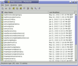

Portecle is a user friendly GUI application for creating, managing and examining keystores, keys, certificates, certificate requests, certificate revocation lists and more.
Currently, Portecle can be used to, for example:
Take the tour. Read the HOWTOs.
|
 |
| keytool | Portecle |
For downloads, contact information, issue tracking and other development facilities, see the SourceForge.net project page. Check also your operating system distribution to see if Portecle is already included.
Portecle can be launched directly with Java Web Start (Java 1.7 or later with Web Start required):
Portecle's Web Start files are self-signed. Security settings in some environments do not allow such Web Start applications to run by default. If an error message indicating this scenario is presented and you want to work around it, one way is to add http://portecle.sourceforge.net/webstart/portecle.jnlp to Java's exception site list.
Most of the cryptographic functionality of this program is implemented using the Bouncy Castle Crypto APIs. GNU Keyring (GKR) keystores are supported using the providers in GNU Classpath (if installed).
The help facility was adapted from work by Dave Seaton.

Copyright © 2004 Wayne Grant
2004 Mark Majczyk
2004-2017 Ville Skyttä
Portecle is free software; you can redistribute it and/or modify it under the terms of the GNU General Public License as published by the Free Software Foundation; either version 2 of the License, or (at your option) any later version.
Portecle is distributed in the hope that it will be useful, but WITHOUT ANY WARRANTY; without even the implied warranty of MERCHANTABILITY or FITNESS FOR A PARTICULAR PURPOSE. See the GNU General Public License for more details.
{kind=link}